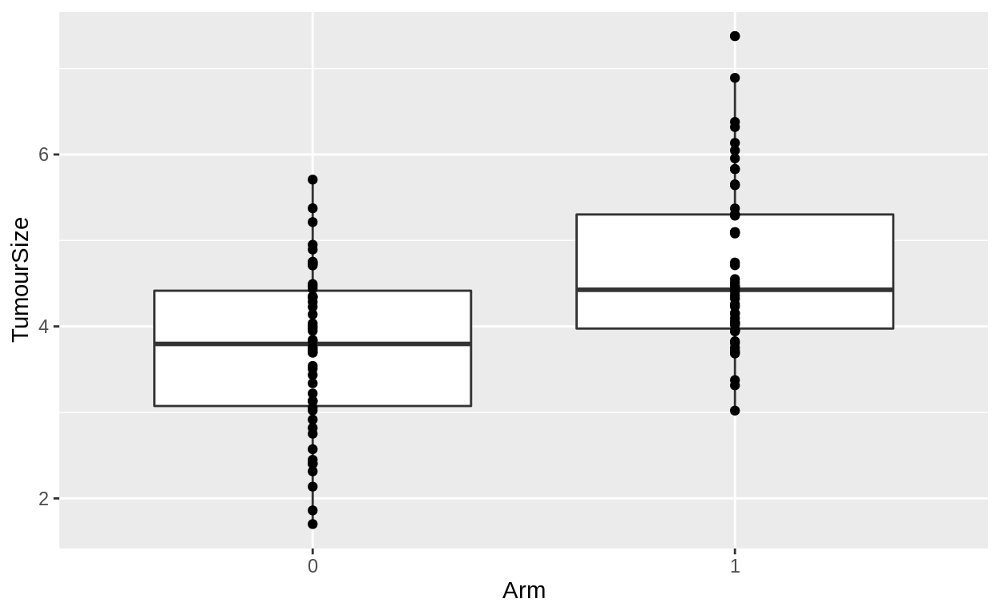
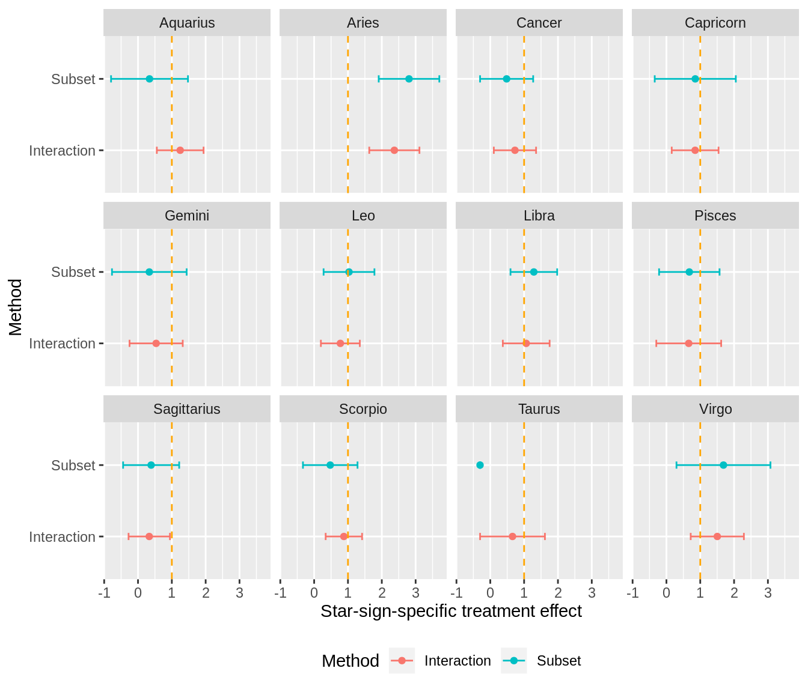
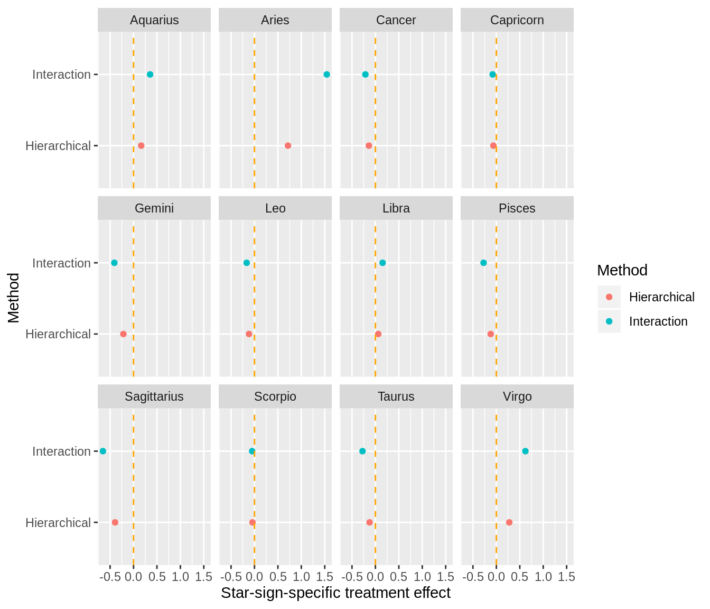
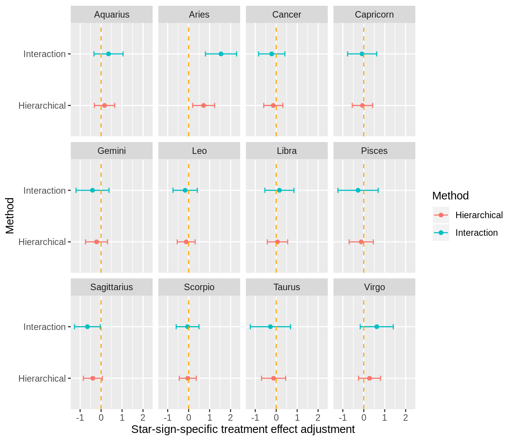

This tutorial demonstrates three different methods for performing a subgroup analyses.
Upon completion of this session, you will:
The analysis of primary interest in a clinical trial is usually that which includes all patients. The eligible population for the trial was defined precisely during trial work-up. The trial offers a chance to estimate the treatment effect in a sample from that population.
Often, of secondary interest will be estimates of the treatment effect in specific subgroups of the population. These subgroup analyses can take on increased prominence if the main analysis fails to show the size of effect that the investigators had hoped. Sometimes subgroup analyses reveal clinically-valid subsets of patients that have, for example, a common genetic trait that effects the efficacy of the treatment.
Sometimes, however, subgroup analyses become indiscriminant fishing expeditions for where the treatment apparently works best. Without pre-specification, the subgroup that will receive the most focus is the one with the most extraordinary outcome. Random variation dictates that the treatment effect estimate will be artifically large in some groups and artifically small in others. This problem is exascerbated by small sample size. If a trial is designed with sample size \(n\) to estimate the effect in the main population with certain precision, the sample size is by definition too small to estimate the same effect in a subgroup with the same precision. This encapsulates the first problem:
Selecting the results to emphasise based on the size of the observed effect practically guarantees that you will be emphasising overstated effects. This encapsulates the second problem:
(and the estimation of subgroup effects may or may not be biased).
It behoves biostatisticians to perform subgroup analyses that, to the greatest extent possible, maintain statistical efficiency and avoid overfitting. In this session, we encounter three methods. These are increasingly complex, but also increasingly able to avoid overfitting whilst maintaining or increasing statistical efficiency.
During this session, we will work with the tumours and patients datasets in the bootcamp package. To emulate a simple RCT with a continuous outcome measured once post-baseline, we make the following changes:
The following code makes those changes:
library(bootcamp)
library(dplyr)
library(ggplot2)
library(broom)
library(lme4)
library(tidyr)
tumours <- tumours %>%
mutate(
Arm = case_when(
Arm == 1 ~ 0,
Arm == 2 ~ 1),
Time = case_when(
Time == 0 ~ 0,
Time == 9 ~ 1)) %>%
as_tibble()Here are the time=1 outcomes by arm:
tumours %>%
filter(Time == 1) %>%
mutate(Arm = factor(Arm)) %>%
ggplot(aes(x = Arm, y = TumourSize)) +
geom_boxplot(aes(group = Arm)) +
geom_point()
It is pretty clear that we are looking for the analysis to reveal a positive treatment effect for arm 0 compared to arm 1 because tumours are reliably smaller in arm 0.
An analysis that adjusts for baseline tumour size is a simple random intercepts hierarchical model:
tumours %>%
filter(Time %in% c(0, 1)) %>%
lmer(TumourSize ~ 1 + (1 | TNO) + Time + Arm:Time, data = .) %>%
tidy()We see that the average tumour measures about 5.1cm at baseline and that tumours shrink by 1.3cm on average in the arm=0 group. The treatment effect is reflected by the Time:Arm1 parameter, the interaction of time with treatment allocation. Tumours shrink by 0.9cm less in the arm=1 group. Thus, the unconditional expected tumour size at time=1 for an arm=0 patient is about 5.1 - 1.3 = 3.8 and for an arm=1 patient is about 5.1 - 1.3 + 0.9 = 4.7. I say “unconditional” to distinguish these estimates from the conditional expected value for a specific patient with known baseline tumour size. The unconditional expected values are reflected in the figure above.
This is the analysis of the full patient group. The treatment effect has associated \(t\)-statistic 6.8, a value thoroughly incompatible with a treatment effect of zero. In an homage to Richard Peto, we will reproduce this analysis approach in subgroups defined by starsign.
The simplest and perhaps most intuitive method for estimating a subgroup effect is what we will call the subset method.
Here, the analysis is performed just on the subset of data that pertains to the subgroup. For instance, to estimate the treatment effect in females, this method would throw away all data for males and perform the analysis only on the outcomes observed in females. In a randomised study with sufficient sample size, we would expect to have females allocated to each treatment arm. The presence of randomisation yields an estimate of the difference in outcomes that can be attributed to the treatment. This estimate will be unbiased. The problem is that it will also be inefficient.
We have subgroups of the following sizes:
patients %>% count(StarSign) %>% arrange(n)Let us estimate the treatment effect in the largest subgroup using the subset method. This requires retaining only data for patients that have starsign Cancer:
tumours %>%
semi_join(patients %>% filter(StarSign == 'Cancer'), by = 'TNO') %>%
filter(Time %in% c(0, 1)) %>%
lmer(TumourSize ~ 1 + (1 | TNO) + Time + Arm:Time, data = .) %>%
tidy()Remember that semi_join retains only rows in the LHS that have a matching key in the RHS, without adding any new data. It is a filtering operation.
Here the treatment effect in the subgroup is estimated to be 0.48cm. with associated \(t\)-statistic 1.2. This would not be rejected as being significantly different to 0 in a convential hypothesis test.
Exercise Perform a subgroup analysis in Libra. Now perform one in the smallest group, Taurus. What estimates do you get for the treatment effect? Feel free to use R or Stata. If you use Stata, you will have to write code to reproduce the changes we made to tumours and then fit the model.
Star-signs were sampled randomly in these datasets, so star-sign will not genuinely be predictive of treatment effect. So what do we think of these estimates? We have nothing to compare them to yet. However, we should be piqued by the necessity to use only some of the data. A good rule of thumb for statisticians is: any method that gladly throws away data is probably no good. The interaction method presented in the next section overcomes this flaw to increase precision.
What we will refer to as the interaction method fits a model to the entire dataset and differentiates the estimates of the treatment effect in the general group and the subgroup using an extra interaction term. All of the data for patients outside the subgroup of interest are retained and used in the model to estimate common parameters, like the intercept and the time effect in our example. No data is thrown away. That is a good thing.
You can either:
Intuitively, option 2 seems to make more sense. However, your choice of specification could be affected by availability of estimates of the parameter standard errors. Whilst it is simple to add the effects across groups, and methods 1 and 2 above will give the same estimates of the overall treatment effects in the subgroup and general group, standard errors cannot simply be added across parameters. An example will illustrate this better:
Let us estimate the treatment effect in the Libra subgroup using version 1 of the interaction method. The model is fit to the entire dataset. Patients outside the subgroup of interest are adorned with an indicator variable to designate that they are in the complement of the group of interest:
tumours %>%
left_join(patients, by = 'TNO') %>%
mutate(Complement = StarSign != 'Libra') %>%
replace_na(list(Complement = TRUE)) %>%
filter(Time %in% c(0, 1)) %>%
lmer(TumourSize ~ 1 + (1 | TNO) + Time + Arm:Time + Complement:Arm:Time,
data = .) %>%
tidy() In this specification, the treatment effect in Libra patients is 1.06 and the treatment effect in the general non-Libra patients is 1.06 - 0.15 = 0.91.
Now let us estimate the same using version 2 of the interaction method. Again, the model is fit to the entire dataset. However, this time patients in the subgroup of interest are adorned with the indicator variable:
tumours %>%
left_join(patients, by = 'TNO') %>%
mutate(Subgroup = StarSign == 'Libra') %>%
replace_na(list(Subgroup = FALSE)) %>%
filter(Time %in% c(0, 1)) %>%
lmer(TumourSize ~ 1 + (1 | TNO) + Time + Arm:Time + Subgroup:Arm:Time, data = .) %>%
tidy()In this specification, the treatment effect in Libra patients is 0.91 + 0.15 = 1.06 and the treatment effect in the general non-Libra patients is 0.91.
Notice that in specification 1, we learn that the estimated SE of the treatment effect in Librans is 3.01. It is non-trivial to recover the same statistic from specification 2. In contrast, specification 2 offers an estimate of the SE of the additional treatment effect in Librans, 0.43. Likewise, this is non-trivial to fetch from specification 1.
Thus, the specification you use allows you to make different inferences. In particular, specification 1 will be useful for comparing subgroup-specific treatment effects to those estimated in the previous section by the subset method. And specification 2 will be useful for comparing subgroup-specific treatment effect adjustments, similar to those provided by the hierarchcial method in the next section.
Exercise Perform a subgroup analysis in Cancer using specification 1 of the interaction method. Now perform one in the Taurus subgroup. How do these estimates compare to those from the subset method? And the SEs?
The code below fits the subset and interaction models to estimate treatment effects in all 12 star-signs, and then plots the estimates by subgroup by method with asymptotic 95% CIs. In this session, focus on the plot. The R code is a bit involved. Ignore it for now (unless you are interested in how purrr facilitates succinct functional programming in R).
star_signs <- c('Aquarius', 'Aries', 'Cancer', 'Capricorn', 'Gemini', 'Leo',
'Libra', 'Pisces', 'Sagittarius', 'Scorpio', 'Taurus', 'Virgo')
library(purrr)
subset_models <- map(
star_signs,
function(x) {
tumours %>%
semi_join(patients %>% filter(StarSign == x), by = 'TNO') %>%
filter(Time %in% c(0, 1)) %>%
lmer(TumourSize ~ 1 + (1 | TNO) + Time + Arm:Time, data = .) %>%
tidy() %>%
mutate(Group = x, Method = 'Subset')
})
interaction_models <- map(
star_signs,
function(x) {
tumours %>%
left_join(patients, by = 'TNO') %>%
mutate(Complement = StarSign != x) %>%
replace_na(list(Complement = TRUE)) %>%
filter(Time %in% c(0, 1)) %>%
lmer(TumourSize ~ 1 + (1 | TNO) + Time + Arm:Time + Complement:Arm:Time,
data = .) %>%
tidy() %>%
mutate(Group = x, Method = 'Interaction')
}
)
bind_rows(
map_df(subset_models, bind_rows),
map_df(interaction_models, bind_rows)
) %>%
mutate(estimate_u = estimate + 1.96 * std.error,
estimate_l = estimate - 1.96 * std.error) %>%
filter(term == 'Time:Arm') %>%
ggplot(aes(x = estimate, y = Method, col = Method)) +
geom_point() +
geom_errorbarh(aes(xmax = estimate_u, xmin = estimate_l), height = 0.1) +
geom_vline(xintercept = 1, col = 'orange', linetype = 'dashed') +
facet_wrap(~ Group) +
labs(x = 'Star-sign-specific treatment effect') +
theme(legend.position = 'bottom')
We see that:
Taurus group, but failed under the subset method.So, we see in this comparison that the interaction method improves on the subset method in terms of both precision (CIs are narrower) and accuracy (the method is less wrong).
Each of the previous methods involves fitting a model for each subgroup. The final approach is a hierarchical model. It estimates in one single analysis all subgroup-specific adjustments to the population treatment effects, whilst also adjusting for baseline measurement, treatment arm and time effect. General principles of Bayesian statistics are that analysing all of your effects in one model is a good thing, and in order to simultaneously estimate many effects without running out of information, hierarchical models are very useful.
To describe this as an hierarchical model is true but seemingly disingenuous: the subset and interaction methods were illustrated by fitting random intercepts models and these are also a type of hierarchical model. The distinction here is that the subgroup effects have become another level of the hierarchy.
Algebgraically, the model is:
\[ y_i = \alpha + a_i + \beta \, t + \gamma \, t \, Arm + b_i t \, Arm + \epsilon\]
and
\[ \epsilon \sim N(0, \sigma^2), \quad a_i \sim N(0, \sigma_a^2), \quad b_i \sim N(0, \sigma_b^2) \]
where the \(a_i\) is the baseline measurement and \(b_i\) is the star-sign for patient \(i\).
The model is disarmingly simple to fit:
tumours %>%
left_join(patients, by = 'TNO') %>%
filter(Time %in% c(0, 1)) %>%
lmer(TumourSize ~ 1 + (1 | TNO) + Time + Arm:Time + (0 + Arm:Time | StarSign),
data = .) -> full_subgroup_model
full_subgroup_model %>% tidy()We see once again that:
Each of these inferences either matches or is very close to the estimates from the simple model illustrated in the Trial Scenario section.
We then have estimates of \(\sigma_a\), \(\sigma_b\), and \(\sigma\). Immediately we observe that \(\sigma_a\) is about twice as large as \(\sigma_b\), showing that adjustments warranted from knowing a patient’s baseline tumour size are about twice as variable as adjustments warranted from knowing a patient’s star-sign. From this, we might rightly question whether knowing star-sign is any use at all.
The treatment effect adjustments by star-sign are:
ranef(full_subgroup_model)$StarSignAs in the previous section, we see that Aries has the most positive adjustment to the general population treatment effect, and Sagittarius the most negative. The size and precision of the adjustment estimates is the focus of the next section.
Once again, code to compare the inferences is provided but not necessarily explained. The interaction models are re-specified to use specification 1 described in previous sections. This is to provide statistics and SEs that compare to the output created by the hierarchical model.
interaction_models_alt <- map(
star_signs,
function(x) {
tumours %>%
left_join(patients, by = 'TNO') %>%
mutate(Subgroup = StarSign == x) %>%
replace_na(list(Subgroup = FALSE)) %>%
filter(Time %in% c(0, 1)) %>%
lmer(TumourSize ~ 1 + (1 | TNO) + Time + Arm:Time + Subgroup:Arm:Time,
data = .) %>%
tidy() %>%
mutate(Group = x, Method = 'Interaction')
}
)
group_effects <- ranef(full_subgroup_model)$StarSign
group_effects_df <- data.frame(
Group = rownames(group_effects),
estimate = group_effects[, 1],
Method = 'Hierarchical'
)
bind_rows(
map_df(interaction_models_alt, bind_rows) %>%
filter(term == 'Time:Arm:SubgroupTRUE') %>%
select(Group, estimate, Method),
group_effects_df
) %>%
ggplot(aes(x = estimate, y = Method, col = Method)) +
geom_point() +
geom_vline(xintercept = 0, col = 'orange', linetype = 'dashed') +
facet_wrap(~ Group) +
labs(x = 'Star-sign-specific treatment effect')
This plot shows adjustments to the population-level treatment effect only. We see that the estimate from the hierarchical model is always closer to the population-level effect, i.e. the adjustment is closer to zero. This is called shrinkage, and it is a general desirable property of hierarchical models that reduces the tendency for models to overfit. It is particularly useful in subgroup analyses.
The model \(b_i \sim N(0, \sigma_b^2)\) shrinks the estimates back to zero. The extent of shrinkage is determined by the data. That is, \(\sigma_b^2\) is estimated from the variability of the star-sign-specific effects that manifest. The suite of interaction models fit in the previous section is akin to an hierarchical model where we set \(\sigma_b = \infty\). Here, no group provides any information about the treatment effect in any other group. This is a far-fetched assumption.
A model that expressly forbids subgroup variability is akin to an hierarchical model where we set \(\sigma_b = 0\). Here, each subgroup is necessarily identical. This too is a far-fetched assumption.
The hierarchical model is a pragmatic compromise between this two implausible extremes where \(\sigma_b\) is estimated from the data.
We will naturally wonder about the precision of the subgroup effects. It is possible (but suspiciously inconvenient) to access SEs of the subgroup effects, as demonstrated below. However, the following [Cross Validated page] (https://stats.stackexchange.com/questions/48254/standard-error-of-random-effects-in-r-lme4-vs-stata-xtmixed) suggests that these SE estimates may not reflect all the pertinent uncertainty and that would prohibit valid comparison between the interaction and hierarchical approaches.
Nevertheless, with that proviso in mind:
group_effects_df <- data.frame(
Group = rownames(group_effects),
estimate = group_effects[, 1],
std.error = sqrt(attr(group_effects, "postVar")[1, , ]),
Method = 'Hierarchical'
)
bind_rows(
map_df(interaction_models_alt, bind_rows) %>%
filter(term == 'Time:Arm:SubgroupTRUE') %>%
select(Group, estimate, std.error, Method),
group_effects_df
) %>%
mutate(estimate_u = estimate + 1.96 * std.error,
estimate_l = estimate - 1.96 * std.error) %>%
ggplot(aes(x = estimate, y = Method, col = Method)) +
geom_point() +
geom_errorbarh(aes(xmax = estimate_u, xmin = estimate_l), height = 0.1) +
geom_vline(xintercept = 0, col = 'orange', linetype = 'dashed') +
facet_wrap(~ Group) +
labs(x = 'Star-sign-specific treatment effect adjustment')
We see that the CIs are narrower under the hierarchical model. Also, the method is less likely to be fooled. The tumours dataset was simulated with no subgroup effects, thus the true value of all of these parameters is zero, as presented by the orange dashed lines. The 95% CIS from the hieraerchical model contain zero in 11 of the 12 groups; the interaction model CIs contain zero in 10 or 12 groups. Both models get Aries wrong, eviently quite an extreme chance event. The CI from the hieraechical model for the Sagittarius subgroup just manages to include zero thanks to the shrinkage provided by the model.
In conclusion, we looked at three increasingly complex methods for performing subgroup analyses.
The subgroup method is wasteful and overfits to chance data. Do not use it.
The interaction method is more precise (i.e. narrower CIs) and more accurate (i.e. less wrong) because it uses all data.
The hierarchcial method is more accurate again because it uses shrinkage. It may or may not be more precise - that question remains open.